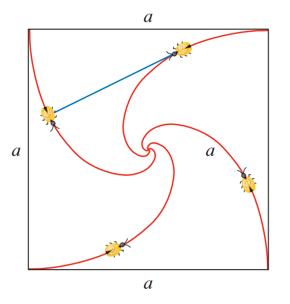

(Stewart)
Four bugs are placed at the four comers of a square with side length \(a\). The bugs crawl
counterclockwise at the same speed and each bug crawls directly toward the next bug at all times.
They approach the center of the square along spiral paths.

Find the polar equation of a bug’s path assuming the pole is at the center of the square. (Use
the fact that the line joining one bug to the next is tangent to the bug’s path along the curve.)
Calculate the distance traveled by a bug
between the corner of the square
and the center of the square.